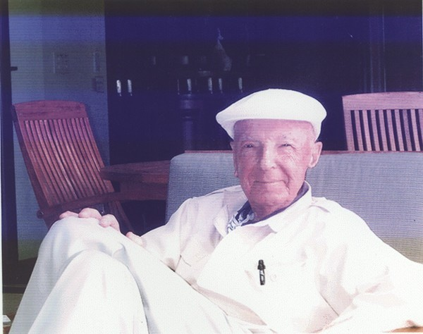

George Bien

Перевод
В 1945 году в Венгрии Джордж Биен и его отец были арестованы органами НКВД. Джордж Биен провел десять лет на Колыме. Отец прожил недолго. После освобождения из лагеря Биен вернулся домой. Когда советские войска подавили восстание в Венгрии, Биен вначале отправился в Австрию, а позднее получил политическое убежище в Соединенных Штатах.
Арест
Джорджу Биену было только шестнадцать лет, когда в 1945 году его и отца арестовали в доме в Будапеште. «Два офицера НКВД и переводчик появились на пороге нашей квартиры и очень вежливо попросили поговорить с отцом. Офицеры провели поверхностный осмотр квартиры и наткнулись на радиоприемник с наушниками, которым мы пользовались, когда не было электричества. Неожиданно обеспокоившись, офицеры поинтересовались, кому принадлежит радио. Я ответил им, что радиоприемник принадлежит мне. Они сказали: «Вы тоже пройдемте с нами». Мы не знали тогда, что мой отец никогда не возвратится, а я смогу увидеть дом только десять лет спустя.”
Труд
“Что касается географического местоположения, мы находились чуть ниже Полярного круга. Заключенные освобождались от работы, если температура падала ниже 40 градусов по Фаренгейту. Это происходило не с целью заботы о заключенных, а с тем, чтобы порадовать охранников. Охранники не любили холод. Рабочие были, главным образом, из политических заключенных, но управляющие лагерем набирались из большинства наиболее выдающихся уголовников. Я работал в лагере: чистил полы в бараках и помогал врачу в осмотре комнат.”
СТРАДАНИЯ
«Допросы проводились исключительно когда стемнеет. Меня вызвали именно ночью. К этому времени я мог только медленно передвигаться, и в темноте два охранника ввели меня в комнату с одной единственной лампой на столе. Там находился высокопоставленный офицер, который ни говоря ни слова, ударил меня по лицу. Я начал плакать, но не из-за удара, а из-за безвыходности ситуации. Через переводчика офицер сообщил мне, что все члены шпионской организации, включая моего отца, признались в совершении преступления, и он требует, чтобы я подписал признание из 30 листов. К этому времени я был так изнеможден и безучастен, что было все равно, в чем меня обвиняют. Мой рассудок прекратил ясно осознавать, и тело жаждало воды. Я подписал каждую страницу.»
ПРОПАГАНДА
«Допросы проводились исключительно когда стемнеет. Меня вызвали именно ночью. К этому времени я мог только медленно передвигаться, и в темноте два охранника ввели меня в комнату с одной единственной лампой на столе. Там находился высокопоставленный офицер, который ни говоря ни слова, ударил меня по лицу. Я начал плакать, но не из-за удара, а из-за безвыходности ситуации. Через переводчика офицер сообщил мне, что все члены шпионской организации, включая моего отца, признались в совершении преступления, и он требует, чтобы я подписал признание из 30 листов. К этому времени я был так изнеможден и безучастен, что было все равно, в чем меня обвиняют. Мой рассудок прекратил ясно осознавать, и тело жаждало воды. Я подписал каждую страницу.»
Конфликт
В лагерь Биена и других заключенных доставили в телячьих вагонах. «Уголовники из Советского преступного мира («блатной» в русском слэнге) занимали верхние койки, они скидывали остальных вниз. Уголовники, как и охранники, казалось, привыкли к существующему порядку. Возможно, они родились в тюрьме и были воспитаны государством. Они не могли говорить, не употребляя матерной речи; они постоянно дрались между собой, и с ненавистью кричали на нас, политических заключенных. Охранники поставили уголовников во главу над остальными заключенными и предоставили им право распределять еду. Обеспечив едой себя, уголовники швыряли остатки нам: черный хлеб, селедку и кусочки сахара. У нас не было кружек, так что мы пили из ведра словно лошади. Не успевал один заключенный совершить несколько глотков, следующий уже изо всех сил тянул на себя ведро, так что вода проливалась на пол.»
Солидарность
« Несмотря на ужасность моего положения, я постоянно пытался учить русский. Мне было совершенно понятно, что единственный шанс выжить зависел от возможности говорить и понимать язык. Я постепенно начал общаться с советскими заключенными, и моя изоляция медленно исчезала. Наконец, я встретил молодого русского товарища, который помог мне написать письмо маме. Где бы я не был, ни заключенные, ни охранники в лагере не имели ни карандашей, ни бумаги. Удивительно, моему русскому товарищу удалось найти огрызок карандаша и кусок бумажного пакета, в котором держали цемент. Мы написали маме, что я в порядке, и чтобы она прислала табак и окорок. Моя мама никогда не получила письма –ни того, ни других, которые я отправлял. Она не получала вестей от меня более восьми лет.»
Охрана
« Нас охраняли женщины. В начале они кричали на нас и называли фашистами, но вскоре поняли, что не стоит нас бояться.Мы напоминали человеческие обломки.»
Выживание
«После затяжной зимы 1946 года медленно наступала весна, и мы продолжили работать в поле. После первых нескольких месяцев я начал привыкать к существующему положению. Однако постоянно испытывал голод. Будучи слабым, худым юношей, я притворялся, что работаю. Фактически, я старался делать как можно меньше, просто изображая занятость, слоняясь без дела.»
Судьба
« Когда я снова увидел дом моего детства, было после десяти вечера. Мне было шестнадцать лет, когда я покинул дом, и сейчас мне двадцать семь. Я медленно брел. Сердце щемило. Я вглядывался в окна на здании, один за другим, пока не увидел свое окно. Я позвонил в дверь, и открыла мама. Ее волосы побелели, но красивое лицо ничуть не изменилось. Мы обнялись и заплакали. Вышла моя сестра и ее муж. Мы не спали всю ночь. Мы говорили, пока не выбились из сил.»
Item List
Prisoners
- Olga Adamova-Sliozberg
- Nina Pavlova Aminova
- Anna Andreeva
- George Bien
- Aleksandr Borin
- Edward Buca
- Boris Chetverikov
- Alexander Dolgun
- Nina Gagen-Torn
- Eugenia Ginzburg
- Gustav Herling
- Evfrosiniia Kersnovskaia
- Lev Kopelev
- Anna Larina
- Galina Ivanova Levinson
- Alfred Martinovich Mirek
- Margarete Buber Neumann
- John Noble
- Dimitri Panin
- Susanna Pechuro
- Evgeniia Michailovna Peunkova
- Lev Razgon
- Jacques Rossi
- Joseph Scholmer
- Thomas Sgovio
- Danylo Shumuk
- Michael Solomon
- Vladimir Tchernavin
- Alla Tumanova